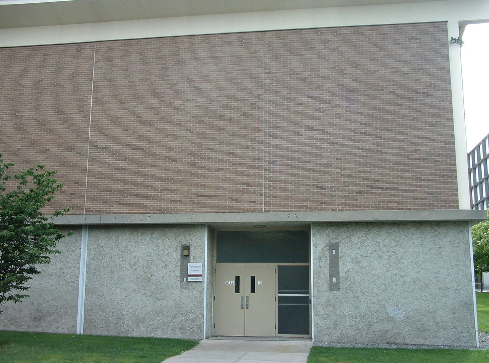

Some materials, called multiferroics, are both electrically polarized and magnetic, and the two properties are linked. That makes them attractive for computer memory and logic: a small voltage could flip the electrical state to write a bit, and the linked magnetic state could be used to read it back, potentially using far less energy than today's devices.
There has long been a catch. When multiferroic films are made thin enough to be useful in a chip, they tend to stop working. Below a certain thickness the crystal structure loses the shape it needs, and internal electric fields swamp the material's polarization, leaving a so-called dead layer that is neither ferroelectric nor magnetic.
Squeezing the crystal
A team led by Lucas Caretta, an assistant professor of engineering at Brown University, reports in Nature Materials that it has found a way around the problem in bismuth ferrite, one of the most widely studied multiferroics. The paper was published online on 28 October 2026.
The researchers grew bismuth ferrite films on a substrate of dysprosium scandate, a rare-earth compound whose crystal spacing is slightly smaller. That mismatch squeezes the film and helps it keep its working atomic structure. A second, metallic layer soaks up the stray electric fields that would otherwise destroy the polarization.
"We've established that we can get rid of the dead layer." (Lucas Caretta, Brown University)
According to Brown, the films stayed ferroelectric and magnetic down to thicknesses of a few angstroms, and their magnetic behavior was actually enhanced. The team's earlier preprint of the work describes the films reaching a thickness of four crystal unit cells, and says the conclusions rest on a combination of theoretical calculations, symmetry analysis, atomic-resolution imaging and several magnetic measurements.
An unusual magnet
The researchers also report signatures of altermagnetism in the ultrathin films. Altermagnets are a recently recognized class of magnetic materials that sit between ferromagnets, whose strong signals are easy to read but whose stray fields make dense packing hard, and antiferromagnets, which are fast and produce no stray fields but are hard to read. Caretta argues that altermagnets could offer speed, dense packing and a readable signal together.

The study does not report a working memory chip or any measured energy savings; the low-power benefits are a goal rather than a result. Caretta describes the work as a step toward low-power computing, and ScienceDaily's account notes that more development is needed before such films could be manufactured reliably and built into commercial electronics. We did not find independent expert comment on the paper at the time of writing. The work was funded by the US Army Research Office, the National Science Foundation and the Department of Energy.